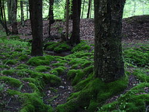

Moss
| Moss | |
|---|---|
|  | |
| Clumps of moss on the ground and base of trees in the Allegheny National Forest, Pennsylvania, United States | |
| Scientific classification | |
| Kingdom: | Plantae |
| Clade: | Embryophytes |
| Clade: | Setaphyta |
| Division: | Bryophyta Schimp. sensu stricto |
| Classes[3] | |
| Synonyms | |
| |
Mosses are small, non-vascular flowerless plants in the taxonomic division Bryophyta (/braɪˈɒfətə/,[4] /ˌbraɪ.əˈfaɪtə/) sensu stricto. Bryophyta (sensu lato, Schimp. 1879[5]) may also refer to the parent group bryophytes, which comprise liverworts, mosses, and hornworts.[6] Mosses typically form dense green clumps or mats, often in damp or shady locations. The individual plants are usually composed of simple leaves that are generally only one cell thick, attached to a stem that may be branched or unbranched and has only a limited role in conducting water and nutrients. Although some species have conducting tissues, these are generally poorly developed and structurally different from similar tissue found in vascular plants.[7] Mosses do not have seeds and after fertilisation develop sporophytes with unbranched stalks topped with single capsules containing spores. They are typically 0.2–10 cm (0.1–3.9 in) tall, though some species are much larger. Dawsonia, the tallest moss in the world, can grow to 50 cm (20 in) in height. There are approximately 12,000 species.[3]
Mosses are commonly confused with liverworts, hornworts and lichens.[8] Although often described as non-vascular plants, many mosses have advanced vascular systems.[9][10] Like liverworts and hornworts, the haploid gametophyte generation of mosses is the dominant phase of the life cycle. This contrasts with the pattern in all vascular plants (seed plants and pteridophytes), where the diploid sporophyte generation is dominant. Lichens may superficially resemble mosses, and sometimes have common names that include the word "moss" (e.g., "reindeer moss" or "Iceland moss"), but they are fungal symbioses and not related to mosses.[8]: 3
The main commercial significance of mosses is as the main constituent of peat (mostly the genus Sphagnum), although they are also used for decorative purposes, such as in gardens and in the florist trade. Traditional uses of mosses included as insulation and for the ability to absorb liquids up to 20 times their weight. Mosses are keystone species and benefit habitat restoration and reforestation.[11]
Physical characteristics
[edit]Description
[edit]Botanically, mosses are non-vascular plants in the land plant division Bryophyta. They are usually small (a few centimeters tall) herbaceous (non-woody) plants that absorb water and nutrients mainly through their leaves and harvest carbon dioxide and sunlight to create food by photosynthesis.[12][13] With the exception of the ancient group Takakiopsida, no known mosses form mycorrhiza,[14] but bryophilous fungi is widespread in moss and other bryophytes, where they live as saprotrophs, parasites, pathogens and mutualists, some of them endophytes.[15] Mosses differ from vascular plants in lacking water-bearing xylem tracheids or vessels. As in liverworts and hornworts, the haploid gametophyte generation is the dominant phase of the life cycle. This contrasts with the pattern in all vascular plants (seed plants and pteridophytes), where the diploid sporophyte generation is dominant. Mosses reproduce using spores, not seeds, and have no flowers.
Moss gametophytes have stems which may be simple or branched and upright (acrocarp) or prostrate (pleurocarp). The early divergent classes Takakiopsida, Sphagnopsida, Andreaeopsida and Andreaeobryopsida either lack stomata or have pseudostomata that do not form pores. In the remaining classes, stomata have been lost more than 60 times.[16] Their leaves are simple, usually only a single layer of cells with no internal air spaces, often with thicker midribs (nerves). The nerve can run beyond the edge of the leaf tip, termed excurrent. The tip of the leaf blade can be extended as a hair point, made of colourless cells. These appear white against the dark green of the leaves. The edge of the leaf can be smooth or it may have teeth. There may be a distinct type of cell defining the edge of the leaf, distinct in shape and/or colour from the other leaf cells.[17]
Moss has threadlike rhizoids that anchor them to their substrate, comparable to root hairs rather than the more substantial root structures of spermatophytes.[18] Mosses do not absorb water or nutrients from their substrate through their rhizoids.[citation needed] They can be distinguished from liverworts (Marchantiophyta or Hepaticae) by their multi-cellular rhizoids. Spore-bearing capsules or sporangia of mosses are borne singly on long, unbranched stems, thereby distinguishing them from the polysporangiophytes, which include all vascular plants. The spore-producing sporophytes (i.e. the diploid multicellular generation) are short-lived and usually capable of photosynthesis, but are dependent on the gametophyte for water supply and most or all of its nutrients.[19] Also, in the majority of mosses, the spore-bearing capsule enlarges and matures after its stalk elongates, while in liverworts the capsule enlarges and matures before its stalk elongates.[13] Other differences are not universal for all mosses and all liverworts, but the presence of a clearly differentiated stem with simple-shaped, non-vascular leaves that are not arranged in three ranks, all point to the plant being a moss.[citation needed]
Life cycle
[edit]Vascular plants have two sets of chromosomes in their vegetative cells and are said to be diploid, i.e. each chromosome has a partner that contains the same, or similar, genetic information. By contrast, mosses and other bryophytes have only a single set of chromosomes and so are haploid (i.e. each chromosome exists in a unique copy within the cell). There is a period in the moss life cycle when they do have a double set of paired chromosomes, but this happens only during the sporophyte stage.
The moss life-cycle starts with a haploid spore that germinates to produce a protonema (pl. protonemata), which is either a mass of thread-like filaments or thalloid (flat and thallus-like). Massed moss protonemata typically look like a thin green felt, and may grow on damp soil, tree bark, rocks, concrete, or almost any other reasonably stable surface. This is a transitory stage in the life of a moss, but from the protonema grows the gametophore ("gamete-bearer") that is structurally differentiated into stems and leaves. A single mat of protonemata may develop several gametophore shoots, resulting in a clump of moss.
From the tips of the gametophore stems or branches develop the sex organs of the mosses. The female organs are known as archegonia (sing. archegonium) and are protected by a group of modified leaves known as the perichaetum (plural, perichaeta). The archegonia are small flask-shaped clumps of cells with an open neck (venter) down which the male sperm swim. The male organs are known as antheridia (sing. antheridium) and are enclosed by modified leaves called the perigonium (pl. perigonia). The surrounding leaves in some mosses form a splash cup, allowing the sperm contained in the cup to be splashed to neighboring stalks by falling water droplets.[20]
Gametophore tip growth is disrupted by fungal chitin.[21][22][23] Galotto et al., 2020 applied chitooctaose and found that tips detected and responded to this chitin derivative by changing gene expression.[21][22][23] They concluded that this defense response was probably conserved from the most recent common ancestor of bryophytes and tracheophytes.[21] Orr et al., 2020 found that the microtubules of growing tip cells were structurally similar to F-actin and served a similar purpose.[22]
Mosses can be either dioicous (compare dioecious in seed plants) or monoicous (compare monoecious). In dioicous mosses, male and female sex organs are borne on different gametophyte plants. In monoicous (also called autoicous) mosses, both are borne on the same plant. In the presence of water, sperm from the antheridia swim to the archegonia and fertilisation occurs, leading to the production of a diploid sporophyte. The sperm of mosses is biflagellate, i.e. they have two flagellae that aid in propulsion. Since the sperm must swim to the archegonium, fertilisation cannot occur without water. Some species (for example Mnium hornum or several species of Polytrichum) keep their antheridia in so called 'splash cups', bowl-like structures on the shoot tips that propel the sperm several decimeters when water droplets hit it, increasing the fertilization distance.[20]
After fertilisation, the immature sporophyte pushes its way out of the archegonial venter. It takes several months for the sporophyte to mature. The sporophyte body comprises a long stalk, called a seta, and a capsule capped by a cap called the operculum. The capsule and operculum are in turn sheathed by a haploid calyptra which is the remains of the archegonial venter. The calyptra usually falls off when the capsule is mature. Within the capsule, spore-producing cells undergo meiosis to form haploid spores, upon which the cycle can start again. The mouth of the capsule is usually ringed by a set of teeth called peristome. This may be absent in some mosses.[citation needed]
Most mosses rely on the wind to disperse the spores. In the genus Sphagnum the spores are projected about 10–20 cm (4–8 in) off the ground by compressed air contained in the capsules; the spores are accelerated to about 36,000 times the earth's gravitational acceleration g.[24][25]
It has recently been found that microarthropods, such as springtails and mites, can effect moss fertilization[26] and that this process is mediated by moss-emitted scents. Male and female fire moss, for example, emit different and complex volatile organic scents.[27] Female plants emit more compounds than male plants. Springtails were found to choose female plants preferentially, and one study found that springtails enhance moss fertilization, suggesting a scent-mediated relationship analogous to the plant-pollinator relationship found in many seed plants.[27] The stinkmoss species Splachnum sphaericum develops insect pollination further by attracting flies to its sporangia with a strong smell of carrion, and providing a strong visual cue in the form of red-coloured swollen collars beneath each spore capsule. Flies attracted to the moss carry its spores to fresh herbivore dung, which is the favoured habitat of the species of this genus.[28]
In many mosses, e.g., Ulota phyllantha, green vegetative structures called gemmae are produced on leaves or branches, which can break off and form new plants without the need to go through the cycle of fertilization. This is a means of asexual reproduction, and the genetically identical units can lead to the formation of clonal populations.
Dwarf males
[edit]Moss dwarf males (also known as nannandry or phyllodioicy) originate from wind-dispersed male spores that settle and germinate on the female shoot where their growth is restricted to a few millimeters. In some species, dwarfness is genetically determined, in that all male spores become dwarf.[29] More often, it is environmentally determined in that male spores that land on a female become dwarf, while those that land elsewhere develop into large, female-sized males.[29][30][31][32] In the latter case, dwarf males that are transplanted from females to another substrate develop into large shoots, suggesting that the females emit a substance which inhibits the growth of germinating males and possibly also quickens their onset of sexual maturation.[31][32] The nature of such a substance is unknown, but the phytohormone auxin may be involved[29]
Having the males growing as dwarfs on the female is expected to increase the fertilization efficiency by minimizing the distance between male and female reproductive organs. Accordingly, it has been observed that fertilization frequency is positively associated with the presence of dwarf males in several phyllodioicous species.[33][34]
Dwarf males occur in several unrelated lineages[34][35] and may be more common than previously thought.[34] For example, it is estimated that between one quarter and half of all dioicous pleurocarps have dwarf males.[34]
DNA repair
[edit]The moss Physcomitrium patens has been used as a model organism to study how plants repair damage to their DNA, especially the repair mechanism known as homologous recombination. If the plant cannot repair DNA damage, e.g., double-strand breaks, in their somatic cells, the cells can lose normal functions or die. If this occurs during meiosis (part of sexual reproduction), they could become infertile. The genome of P. patens has been sequenced, which has allowed several genes involved in DNA repair to be identified.[36] P. patens mutants that are defective in key steps of homologous recombination have been used to work out how the repair mechanism functions in plants. For example, a study of P. patens mutants defective in RpRAD51, a gene that encodes a protein at the core of the recombinational repair reaction, indicated that homologous recombination is essential for repairing DNA double-strand breaks in this plant.[37] Similarly, studies of mutants defective in Ppmre11 or Pprad50 (that encode key proteins of the MRN complex, the principal sensor of DNA double-strand breaks) showed that these genes are necessary for repair of DNA damage as well as for normal growth and development.[38]
Classification
[edit]More recently, mosses have been grouped with the liverworts and hornworts in the division Bryophyta (bryophytes, or Bryophyta sensu lato).[6][39] The bryophyte division itself contains three (former) divisions: Bryophyta (mosses), Marchantiophyta (liverworts) and Anthocerotophyta (hornworts); it has been proposed that these latter divisions are de-ranked to the classes Bryopsida, Marchantiopsida, and Anthocerotopsida, respectively.[6] The mosses and liverworts are now considered to belong to a clade called Setaphyta.[40][41][42]
The mosses, (Bryophyta sensu stricto), are divided into eight classes:
division Bryophyta
|
| |||||||||||||||||||||||||||||||||||||||||||||||||||
| The current phylogeny and composition of the Bryophyta.[3][43] | ||||||||||||||||||||||||||||||||||||||||||||||||||||
Six of the eight classes contain only one or two genera each. Polytrichopsida includes 23 genera, and Bryopsida includes the majority of moss diversity with over 95% of moss species belonging to this class.
The Sphagnopsida, the peat-mosses, comprise the two living genera Ambuchanania and Sphagnum, as well as fossil taxa. Sphagnum is a diverse, widespread, and economically important one. These large mosses form extensive acidic bogs in peat swamps. The leaves of Sphagnum have large dead cells alternating with living photosynthetic cells. The dead cells help to store water. Aside from this character, the unique branching, thallose (flat and expanded) protonema, and explosively rupturing sporangium place it apart from other mosses.
Andreaeopsida and Andreaeobryopsida are distinguished by the biseriate (two rows of cells) rhizoids, multiseriate (many rows of cells) protonema, and sporangium that splits along longitudinal lines. Most mosses have capsules that open at the top.
Polytrichopsida have leaves with sets of parallel lamellae, flaps of chloroplast-containing cells that look like the fins on a heat sink. These carry out photosynthesis and may help to conserve moisture by partially enclosing the gas exchange surfaces. The Polytrichopsida differ from other mosses in other details of their development and anatomy too, and can also become larger than most other mosses, with e.g., Polytrichum commune forming cushions up to 40 cm (16 in) high. The tallest land moss, a member of the Polytrichidae is probably Dawsonia superba, a native to New Zealand and other parts of Australasia.
Geological history
[edit]The fossil record of moss is sparse, due to their soft-walled and fragile nature. Unambiguous moss fossils have been recovered from as early as the Permian of Antarctica and Russia, and a case has been made for Carboniferous mosses.[44] It has further been claimed that tube-like fossils from the Silurian are the macerated remains of moss calyptræ.[45] Mosses also appear to evolve 2–3 times slower than ferns, gymnosperms and angiosperms.[46]
Recent research shows that ancient moss could explain why the Ordovician ice ages occurred. When the ancestors of today's moss started to spread on land 470 million years ago, they absorbed CO2 from the atmosphere and extracted minerals by secreting organic acids that dissolved the rocks they were growing on. These chemically altered rocks in turn reacted with the atmospheric CO2 and formed new carbonate rocks in the ocean through the weathering of calcium and magnesium ions from silicate rocks. The weathered rocks also released significant amounts of phosphorus and iron which ended up in the oceans, where it caused massive algal blooms, resulting in organic carbon burial, extracting more carbon dioxide from the atmosphere. Small organisms feeding on the nutrients created large areas without oxygen, which caused a mass extinction of marine species, while the levels of CO2 dropped all over the world, allowing the formation of ice caps on the poles.[47][48]
Ecology
[edit]Habitat
[edit]-
Dense moss colonies in a cool coastal forest
-
A cool high altitude/latitude moss forest; the forest floor is covered in moss, beneath conifers
-
 Moss growing along the stream from a karst spring; travertine deposits from the stream water and the moss overgrows it, forming this ridge, with the stream on top.
Moss growing along the stream from a karst spring; travertine deposits from the stream water and the moss overgrows it, forming this ridge, with the stream on top. -
Moss with sporophytes on brick
-
Young sporophytes of the common moss Tortula muralis (wall screw-moss)
-
 Retaining wall covered in moss
Retaining wall covered in moss -
A small clump of moss beneath a conifer (a shady, usually dry place)
-
Moss on a concrete wall
-
_on_the_forest_floor_in_Broken_Bow,_Oklahoma.jpg) Moss (Bryophyta) on the forest floor in Broken Bow, Oklahoma
Moss (Bryophyta) on the forest floor in Broken Bow, Oklahoma


_on_the_forest_floor_in_Broken_Bow,_Oklahoma.jpg)
{kind=link}
{kind=link}
{kind=link}
{kind=link}
{kind=link}
{kind=link}
{kind=link}
{kind=link}
{kind=link}
.jpg){kind=link}
_03.jpg){kind=link}
{kind=link}
{kind=link}
{kind=link}
{kind=link}
Mosses live in almost every terrestrial habitat type on Earth.[49][50] Though mosses are particularly abundant in certain habitats such as peatlands, where Sphagnum mosses are the dominant organism, and in moist boreal, temperate, and montane tropical forests, mosses grow in many other habitats, including habitats with conditions too extreme for vascular plants to survive. Desiccation tolerant mosses are important in arid and semi-arid ecosystems,[51][52] where they help form biocrusts that mediate extremes of soil temperature,[53] regulate soil moisture,[54] and regulate the release and uptake of carbon.[55] Mosses can live on substrates heated by geothermal activity to temperatures exceeding 50 degrees Celsius,[56] on walls and pavement in urban areas,[57] and in Antarctica.[58] Moss diversity is generally not associated with latitude; boreal and temperate moss diversity is similar to tropical moss diversity. Moss diversity hotspots are found in the northern Andes mountains, Mexico, the Himalayan mountains, Madagascar, Japan, the highlands of eastern Africa, Southeast Asia, central Europe, Scandinavia, and British Columbia.[59]
Moss gametophytes are autotrophic and require sunlight to perform photosynthesis.[60] In most areas, mosses grow chiefly in moist, shaded areas, such as wooded areas and at the edges of streams, but shade tolerance varies by species.
Different moss species grow on different substrates as well. Moss species can be classed as growing on: rocks, exposed mineral soil, disturbed soils, acid soil, calcareous soil, cliff seeps and waterfall spray areas, streamsides, shaded humusy soil, downed logs, burnt stumps, tree trunk bases, upper tree trunks, and tree branches or in bogs. Moss species growing on or under trees are often specific about the species of trees they grow on, such as preferring conifers over broadleaf trees, oaks over alders, or vice versa.[13] While mosses often grow on trees as epiphytes, they are never parasitic on the tree.
Mosses are also found in cracks between paving stones in damp city streets, and on roofs. Some species adapted to disturbed, sunny areas are well adapted to urban conditions and are commonly found in cities. Examples would be Rhytidiadelphus squarrosus, a garden weed in Vancouver and Seattle areas; Bryum argenteum, the cosmopolitan sidewalk moss, and Ceratodon purpureus, red roof moss, another cosmopolitan species. A few species are wholly aquatic, such as Fontinalis antipyretica, common water moss; and others such as Sphagnum inhabit bogs, marshes and very slow-moving waterways.[13] Such aquatic or semi-aquatic mosses can greatly exceed the normal range of lengths seen in terrestrial mosses. Individual plants 20–30 cm (8–12 in) or more long are common in Sphagnum species for example. But even aquatic species of moss and other bryophytes needs their mature capsules to be exposed to air by seta elongation or seasonal lowering of water level to be able to reproduce.[61]
Wherever they occur, mosses require liquid water for at least part of the year to complete fertilisation. Many mosses can survive desiccation, sometimes for months, returning to life within a few hours of rehydration.[60] Mosses in arid habitats, such as the moss Syntrichia caninervis, have adaptations for collecting non-rainfall sources of moisture like dew and fog, capturing condensation from the air.[62]
It is generally believed that in the Northern Hemisphere, the north side of trees and rocks will generally have more luxuriant moss growth on average than other sides.[63] The reason is assumed to be because sunshine on the south side causes a dry environment. The reverse would be true in the Southern Hemisphere. Some naturalists feel that mosses grow on the damper side of trees and rocks.[12] In some cases, such as sunny climates in temperate northern latitudes, this will be the shaded north side of the tree or rock. On steep slopes, it may be the uphill side. For mosses that grow on tree branches, this is generally the upper side of the branch on horizontally growing sections or near the crotch. In cool, humid, cloudy climates, all sides of tree trunks and rocks may be equally moist enough for moss growth. Each species of moss requires certain amounts of moisture and sunlight and thus will grow on certain sections of the same tree or rock.
Some mosses grow underwater, or completely waterlogged. Many prefer well-drained locations. There are mosses that preferentially grow on rocks and tree trunks of various chemistries.[64]
Relationship with cyanobacteria
[edit]In boreal forests, some species of moss play an important role in providing nitrogen for the ecosystem due to their relationship with nitrogen-fixing cyanobacteria. Cyanobacteria colonize moss and receive shelter in return for providing fixed nitrogen. Moss releases the fixed nitrogen, along with other nutrients, into the soil "upon disturbances like drying-rewetting and fire events", making it available throughout the ecosystem.[65]
Cultivation
[edit].jpeg){kind=link}
{kind=link}
Moss is often considered a weed in grass lawns, but is deliberately encouraged to grow under aesthetic principles exemplified by Japanese gardening. In old temple gardens, moss can carpet a forest scene. Moss is thought to add a sense of calm, age, and stillness to a garden scene. Moss is also used in bonsai to cover the soil and enhance the impression of age.[66] Rules of cultivation are not widely established. Moss collections are quite often begun using samples transplanted from the wild in a water-retaining bag. Some species of moss can be extremely difficult to maintain away from their natural sites with their unique requirements of combinations of light, humidity, substrate chemistry, shelter from wind, etc.
Growing moss from spores is even less controlled. Moss spores fall in a constant rain on exposed surfaces; those surfaces which are hospitable to a certain species of moss will typically be colonised by that moss within a few years of exposure to wind and rain. Materials which are porous and moisture retentive, such as brick, wood, and certain coarse concrete mixtures, are hospitable to moss. Surfaces can also be prepared with acidic substances, including buttermilk, yogurt, urine, and gently puréed mixtures of moss samples, water and ericaceous compost.
In the cool, humid, cloudy Pacific Northwest, moss is sometimes allowed to grow naturally as a moss lawn, one that needs little or no mowing, fertilizing or watering. In this case, grass is considered to be the weed.[67] Landscapers in the Seattle area sometimes collect boulders and downed logs growing mosses for installation in gardens and landscapes. Woodland gardens in many parts of the world can include a carpet of natural mosses.[60] The Bloedel Reserve on Bainbridge Island, Washington State, is famous for its moss garden. The moss garden was created by removing shrubby underbrush and herbaceous groundcovers, thinning trees, and allowing mosses to fill in naturally.[68]
Green roofs and walls
[edit]{kind=link}
Mosses are sometimes used in green roofs. Advantages of mosses over higher plants in green roofs include reduced weight loads, increased water absorption, no fertilizer requirements, and high drought tolerance. Since mosses do not have true roots, they require less planting medium than higher plants with extensive root systems. With proper species selection for the local climate, mosses in green roofs require no irrigation once established and are low maintenance.[69] Mosses are also used on green walls.
Mossery
[edit]A passing fad for moss-collecting in the late 19th century led to the establishment of mosseries in many British and American gardens. The mossery is typically constructed out of slatted wood, with a flat roof, open to the north side (maintaining shade). Samples of moss were installed in the cracks between wood slats. The whole mossery would then be regularly moistened to maintain growth.
Aquascaping
[edit]Aquascaping uses many aquatic mosses. They do best at low nutrient, light, and heat levels, and propagate fairly readily. They help maintain a water chemistry suitable for aquarium fish.[70] They grow more slowly than many aquarium plants, and are fairly hardy.[71]
Growth inhibition
[edit]Moss can be a troublesome weed in containerized nursery operations and greenhouses.[72] Vigorous moss growth can inhibit seedling emergence and penetration of water and fertilizer to the plant roots.
Moss growth can be inhibited by a number of methods:
- Decreasing availability of water through drainage.
- Increasing direct sunlight.
- Increasing number and resources available for competitive plants like grasses.
- Increasing the soil pH with the application of lime.
- Heavy traffic or manually disturbing the moss bed with a rake
- Application of chemicals such as ferrous sulfate (e.g., in lawns) or bleach (e.g., on solid surfaces).
- In containerized nursery operations, coarse mineral materials such as sand, gravel, and rock chips are used as a fast-draining top dressing in plant containers to discourage moss growth.
The application of products containing ferrous sulfate or ferrous ammonium sulfate will kill moss; these ingredients are typically in commercial moss control products and fertilizers. Sulfur and iron are essential nutrients for some competing plants like grasses. Killing moss will not prevent regrowth unless conditions favorable to their growth are changed.[73]
Uses
[edit]{kind=link}
Traditional
[edit]Preindustrial societies made use of the mosses growing in their areas.
Sámi people, North American tribes, and other circumpolar peoples used mosses for bedding.[12][60] Mosses have also been used as insulation both for dwellings and in clothing. Traditionally, dried moss was used in some Nordic countries and Russia as an insulator between logs in log cabins, and tribes of the northeastern United States and southeastern Canada used moss to fill chinks in wooden longhouses.[60] Circumpolar and alpine peoples have used mosses for insulation in boots and mittens. Ötzi the Iceman had moss-packed boots.[60]
The capacity of dried mosses to absorb fluids has made their use practical in both medical and culinary uses. North American tribal people used mosses for diapers, wound dressing, and menstrual fluid absorption.[60] Tribes of the Pacific Northwest in the United States and Canada used mosses to clean salmon prior to drying it, and packed wet moss into pit ovens for steaming camas bulbs. Food storage baskets and boiling baskets were also packed with mosses.[60]
Recent research investigating the Neanderthals remains recovered from El Sidrón have provided evidence that their diet would have consisted primarily of pine nuts, moss and mushrooms. This is contrasted by evidence from other European locations, which point to a more carnivorous diet.[74]
In Finland, peat mosses have been used to make bread during famines.[75]
Commercial
[edit]{kind=link}
There is a substantial market in mosses gathered from the wild. The uses for intact moss are principally in the florist trade and for home decoration. Decaying moss in the genus Sphagnum is also the major component of peat, which is "mined" for use as a fuel, as a horticultural soil additive, and in smoking malt in the production of Scotch whisky.
Sphagnum moss, generally the species S. cristatum and S. subnitens, is harvested while still growing and is dried out to be used in nurseries and horticulture as a plant growing medium.
Some Sphagnum mosses can absorb up to 20 times their own weight in water.[76] In World War I, Sphagnum mosses were used as first-aid dressings on soldiers' wounds, as these mosses said to absorb liquids three times faster than cotton, retain liquids better, better distribute liquids uniformly throughout themselves, and are cooler, softer, and less irritating.[76] Moss is also claimed to have antibacterial properties.[77] Native Americans were one of the peoples to use Sphagnum for diapers and menstrual pads, which is still done in Canada.[78]
In rural UK, Fontinalis antipyretica was traditionally used to extinguish fires as it could be found in substantial quantities in slow-moving rivers and the moss retained large volumes of water which helped extinguish the flames. This historical use is reflected in its specific Latin/Greek name, which means "against fire".
In Mexico, moss is used as a Christmas decoration.
Physcomitrium patens is increasingly used in biotechnology. Prominent examples are the identification of moss genes with implications for crop improvement or human health[79] and the safe production of complex biopharmaceuticals in the moss bioreactor, developed by Ralf Reski and his co-workers.[80]
London installed several structures called "City Trees": moss-filled walls, each of which is claimed to have "the air-cleaning capability of 275 regular trees" by consuming nitrogen oxides and other types of air pollution and producing oxygen.[81]
References
[edit]- ^ Hubers, M.; Kerp, H. (2012). "Oldest known mosses discovered in Mississippian (late Visean) strata of Germany". Geology. 40 (8): 755–58. Bibcode:2012Geo....40..755H. doi:10.1130/G33122.1.
- ^ Yang, Rui-Dong; Mao, Jia-Ren; Zhang, Wei-Hua; Jiang, Li-Jun; Gao, Hui (2004). "Bryophyte-like Fossil (Parafunaria sinensis) from Early-Middle Cambrian Kaili Formation in Guizhou Province, China". Acta Botanica Sinica. 46 (2): 180–185.
- ^ Jump up to: a b c Goffinet, Bernard; William R. Buck (2004). "Systematics of the Bryophyta (Mosses): From molecules to a revised classification". Monographs in Systematic Botany. Molecular Systematics of Bryophytes. Vol. 98. Missouri Botanical Garden Press. pp. 205–239. ISBN 978-1-930723-38-2.
- ^ "Bryophyta". Merriam-Webster.com Dictionary. Merriam-Webster.
- ^ Schimper, W. P. (1879). "Bryophyta". In Zittel, K.A. (ed.). Handbuch der Palaeontologie. Vol. 2. R. Oldenbourg.
- ^ Jump up to: a b c de Sousa, Filipe; et al. (2019). "Nuclear protein phylogenies support the monophyly of the three bryophyte groups (Bryophyta Schimp.)". New Phytologist. 222 (1): 565–75. Bibcode:2019NewPh.222..565D. doi:10.1111/nph.15587. hdl:1983/0b471d7e-ce54-4681-b791-1da305d9e53b. PMID 30411803. S2CID 53240320.
- ^ Ligrone, R.; Duckett, J.G.; Renzaglia, K.S. (2000). "Conducting tissues and phyletic relationships of bryophytes". Philos Trans R Soc Lond B Biol Sci. 355 (1398): 795–813. doi:10.1098/rstb.2000.0616. PMC 1692789. PMID 10905610.
- ^ Jump up to: a b Lichens of North America, Irwin M. Brodo, Sylvia Duran Sharnoff, ISBN 978-0-300-08249-4, 2001
- ^ Bell, N. E. & Hyvönen, J. (2010). "Phylogeny of the moss class Polytrichopsida (BRYOPHYTA): Generic-level structure and incongruent gene trees". Molecular Phylogenetics and Evolution. 55 (2): 381–398. Bibcode:2010MolPE..55..381B. doi:10.1016/j.ympev.2010.02.004. PMID 20152915.
- ^ Bodribb, T.J.; et al. (2020). "Advanced vascular function discovered in a widespread moss". Nature Plants. 6 (3): 273–279. Bibcode:2020NatPl...6..273B. doi:10.1038/s41477-020-0602-x. PMID 32170283. S2CID 212641738.
- ^ Rochefort, Line (2000). "Sphagnum: A Keystone Genus in Habitat Restoration". The Bryologist. 103 (3): 503–508. doi:10.1639/0007-2745(2000)103[0503:SAKGIH]2.0.CO;2. ISSN 0007-2745. JSTOR 3244138. S2CID 55699307.
- ^ Jump up to: a b c Mathews, Daniel (1994). Cascade-Olympic Natural History. Portland, Oregon: Audubon Society of Portland/Raven Editions. ISBN 978-0-9620782-0-0.
- ^ Jump up to: a b c d Pojar and MacKinnon (1994). Plants of the Pacific Northwest Coast. Vancouver, British Columbia: Lone Pine Publishing. ISBN 978-1-55105-040-9.
- ^ Wang, Bin; Yeun, Li Huey; Xue, Jia-Yu; Liu, Yang; Ané, Jean-Michel; Qiu, Yin-Long (19 December 2010). "Presence of three mycorrhizal genes in the common ancestor of land plants suggests a key role of mycorrhizas in the colonization of land by plants". New Phytologist. 186 (2): 514–525. Bibcode:2010NewPh.186..514W. doi:10.1111/j.1469-8137.2009.03137.x. hdl:2027.42/78704. PMID 20059702 – via Wiley Online Library.
- ^ "Using 454 sequencing for exploring diversity, host specificity and tissue specificity of the fungal genus Galerina associated with four boreal mosses" (PDF).
- ^ Renzaglia, Karen S.; Browning, William B.; Merced, Amelia (28 May 2020). "With Over 60 Independent Losses, Stomata Are Expendable in Mosses". Frontiers in Plant Science. 11: 567. Bibcode:2020FrPS...11..567R. doi:10.3389/fpls.2020.00567. PMC 7270291. PMID 32547571.
- ^ Atherton, Ian; Bosanquet, Sam; Lawley, Mark (2010). Mosses and Liverworts of Britain and Ireland - a field guide. British Bryological Society. p. 848. ISBN 9780956131010.
- ^ Watson, E. Vernon (1981). British Mosses and Liverworts (3rd ed.). Cambridge University Press. p. 519. ISBN 052129472X.
- ^ Budke, Jessica M; Bernard, Ernest C; Gray, Dennis J; Huttunen, Sanna; Piechulla, Birgit; Trigiano, Robert N (2018). "Introduction to the special issue on bryophytes". Critical Reviews in Plant Sciences. 37 (2–3): 102–112. Bibcode:2018CRvPS..37..102B. doi:10.1080/07352689.2018.1482396.
- ^ Jump up to: a b van der Velde, M.; During, H. J.; van de Zande, L.; Bijlsma, R. (2001). "The reproductive biology of Polytrichum formosum: clonal structure and paternity revealed by microsatellites". Molecular Ecology. 10 (10): 2423–2434. Bibcode:2001MolEc..10.2423V. doi:10.1046/j.0962-1083.2001.01385.x. PMID 11742546. S2CID 19716812.
- ^ Jump up to: a b c Delaux, Pierre-Marc; Schornack, Sebastian (19 February 2021). "Plant evolution driven by interactions with symbiotic and pathogenic microbes" (PDF). Science. 371 (6531). American Association for the Advancement of Science (AAAS): 1–10. doi:10.1126/science.aba6605. ISSN 0036-8075. PMID 33602828. S2CID 231955632.
- ^ Jump up to: a b c Bibeau, Jeffrey P.; Galotto, Giulia; Wu, Min; Tüzel, Erkan; Vidali, Luis (6 April 2021). "Quantitative cell biology of tip growth in moss". Plant Molecular Biology. 107 (4–5). Springer: 227–244. Bibcode:2021PMolB.107..227B. doi:10.1007/s11103-021-01147-7. ISSN 0167-4412. PMC 8492783. PMID 33825083.
- ^ Jump up to: a b Sun, Guiling; Bai, Shenglong; Guan, Yanlong; Wang, Shuanghua; Wang, Qia; Liu, Yang; Liu, Huan; Goffinet, Bernard; Zhou, Yun; Paoletti, Mathieu; Hu, Xiangyang; Haas, Fabian B.; Fernandez-Pozo, Noe; Czyrt, Alia; Sun, Hang; Rensing, Stefan A.; Huang, Jinling (31 July 2020). "Are fungi-derived genomic regions related to antagonism towards fungi in mosses?". New Phytologist. 228 (4). New Phytologist Foundation (Wiley): 1169–1175. Bibcode:2020NewPh.228.1169S. doi:10.1111/nph.16776. ISSN 0028-646X. PMID 32578878. S2CID 220047618.
- ^ Johan L. van Leeuwen (23 July 2010). "Launched at 36,000g". Science. 329 (5990): 395–6. doi:10.1126/science.1193047. PMID 20651138. S2CID 206527957.
- ^ Dwight K. Whitaker & Joan Edwards (23 July 2010). "Sphagnum Moss Disperses Spores with Vortex Rings". Science. 329 (5990): 406. Bibcode:2010Sci...329..406W. doi:10.1126/science.1190179. PMID 20651145. S2CID 206526774.
- ^ Cronberg, N.; Natcheva, R.; Hedlund, K. (2006). "Microarthropods Mediate Sperm Transfer in Mosses". Science. 313 (5791): 1255. doi:10.1126/science.1128707. PMID 16946062. S2CID 11555211.
- ^ Jump up to: a b Rosenstiel, T. N.; Shortlidge, E. E.; Melnychenko, A. N.; Pankow, J. F.; Eppley, S. M. (2012). "Sex-specific volatile compounds influence microarthropod-mediated fertilization of moss". Nature. 489 (7416): 431–433. Bibcode:2012Natur.489..431R. doi:10.1038/nature11330. PMID 22810584. S2CID 4419337.
- ^ Vaizey, J. R. (1890). "On the Morphology of the Sporophyte of Splachnum luteum". Annals of Botany. 1: 1–8. doi:10.1093/oxfordjournals.aob.a090623.
- ^ Jump up to: a b c Une, Kouji (1985). "Sexual dimorphism in the Japanese species of Macromitrium Brid.(Musci: Orthotrichaceae)". The Journal of the Hattori Botanical Laboratory Devoted to Bryology and Lichenology. 59: 487–513.
- ^ Blackstock, T. H. (1987). "The male gametophores of Leucobryum glaucum (Hedw.) Ångstr. and L. juniperoideum (Brid.) C. Muell. in two Welsh woodlands". Journal of Bryology. 14 (3): 535–541. Bibcode:1987JBryo..14..535B. doi:10.1179/jbr.1987.14.3.535.
- ^ Jump up to: a b Loveland, Hugh Frank (1956). Sexual dimorphism in the moss genus Dicranum Hedw. (Dissertation). University of Michigan.
- ^ Jump up to: a b Wallace, M. H. (1970). Developmental morphology and sexual dimorphism in Homalothecium megaptilum (Sull.) Robins. (Dissertation). Washington State University.
- ^ Sagmo Solli, I. M.; Söderström, Lars; Bakken, Solveig; Flatberg, Kjell Ivar; Pedersen, Bård (1998). "Studies of fertility of Dicranum majus in two populations with contrasted sporophyte production". Journal of Bryology. 22 (1): 3–8. doi:10.1179/jbr.2000.22.1.3. S2CID 85349694.
- ^ Jump up to: a b c d Hedenäs, Lars; Bisang, Irene (2011). "The overlooked dwarf males in mosses—unique among green land plants". Perspectives in Plant Ecology, Evolution and Systematics. 13 (2): 121–135. Bibcode:2011PPEES..13..121H. doi:10.1016/j.ppees.2011.03.001.
- ^ Ramsay, Helen P.; Berrie, G. K. (1982). "Sex determination in bryophytes". Journal of the Hattori Botanical Laboratory. 52: 255–274.
- ^ Rensing, S.A.; Lang, D; Zimmer, A.D.; Terry, A.; Salamov, A; Shapiro, H.; Nishiyama, T.; et al. (January 2008). "The Physcomitrella genome reveals evolutionary insights into the conquest of land by plants" (PDF). Science. 319 (5859): 64–9. Bibcode:2008Sci...319...64R. doi:10.1126/science.1150646. hdl:11858/00-001M-0000-0012-3787-A. PMID 18079367. S2CID 11115152.
- ^ Markmann-Mulisch U, Wendeler E, Zobell O, Schween G, Steinbiss HH, Reiss B (October 2007). "Differential requirements for RAD51 in Physcomitrella patens and Arabidopsis thaliana development and DNA damage repair". Plant Cell. 19 (10): 3080–9. Bibcode:2007PlanC..19.3080M. doi:10.1105/tpc.107.054049. PMC 2174717. PMID 17921313.
- ^ Kamisugi Y, Schaefer DG, Kozak J, Charlot F, Vrielynck N, Holá M, Angelis KJ, Cuming AC, Nogué F (April 2012). "MRE11 and RAD50, but not NBS1, are essential for gene targeting in the moss Physcomitrella patens". Nucleic Acids Res. 40 (8): 3496–510. doi:10.1093/nar/gkr1272. PMC 3333855. PMID 22210882.
- ^ Cox, Cymon J.; et al. (2014). "Conflicting Phylogenies for Early Land Plants are Caused by Composition Biases among Synonymous Substitutions". Systematic Biology. 63 (2): 272–279. doi:10.1093/sysbio/syt109. PMC 3926305. PMID 24399481.
- ^ Puttick, Mark N.; et al. (2018). "The Interrelationships of Land Plants and the Nature of the Ancestral Embryophyte". Current Biology. 28 (5): 733–745.e2. Bibcode:2018CBio...28E.733P. doi:10.1016/j.cub.2018.01.063. hdl:1983/ad32d4da-6cb3-4ed6-add2-2415f81b46da. PMID 29456145. S2CID 3269165.
- ^ Sousa, Filipe; et al. (2020). "The mitochondrial phylogeny of land plants shows support for Setaphyta under composition-heterogeneous substitution models". PeerJ. 8 (4): e8995. doi:10.7717/peerj.8995. PMC 7194085. PMID 32377448.
- ^ Cox, Cymon J. (2018). "Land Plant Molecular Phylogenetics: A Review with Comments on Evaluating Incongruence Among Phylogenies". Critical Reviews in Plant Sciences. 37 (2–3): 113–127. Bibcode:2018CRvPS..37..113C. doi:10.1080/07352689.2018.1482443. hdl:10400.1/14557. S2CID 92198979.
- ^ Buck, William R. & Bernard Goffinet. (2000). "Morphology and classification of mosses", pages 71–123 in A. Jonathan Shaw & Bernard Goffinet (Eds.), Bryophyte Biology. (Cambridge: Cambridge University Press). ISBN 0-521-66097-1.
- ^ Thomas, B.A. (1972). "A probable moss from the Lower Carboniferous of the Forest of Dean, Gloucestershire". Annals of Botany. 36 (1): 155–161. doi:10.1093/oxfordjournals.aob.a084568. ISSN 1095-8290. JSTOR 42752024.
- ^ Kodner, R. B.; Graham, L. E. (2001). "High-temperature, acid-hydrolyzed remains of Polytrichum (Musci, Polytrichaceae) resemble enigmatic Silurian-Devonian tubular microfossils". American Journal of Botany. 88 (3): 462–466. doi:10.2307/2657111. JSTOR 2657111. PMID 11250824.
- ^ Stenøien, H. K. (2008). "Slow molecular evolution in 18S rDNA, rbcL and nad5 genes of mosses compared with higher plants". Journal of Evolutionary Biology. 21 (2): 566–571. doi:10.1111/j.1420-9101.2007.01479.x. PMID 18205784.
- ^ "First land plants plunged Earth into ice age". Newscientist.com. Archived from the original on 23 September 2013. Retrieved 11 September 2013.
- ^ "First Plants Caused Ice Ages, New Research Reveals". Sciencedaily.com. 1 February 2012. Archived from the original on 3 October 2013. Retrieved 11 September 2013.
- ^ Medina, Nagore G.; Draper, Isabel; Lara, Francisco (2011). "Biogeography of mosses and allies: does size matter?". Biogeography of Microscopic Organisms. Is Everything Small Everywhere: 209–233. doi:10.1017/CBO9780511974878.012. ISBN 978-0-521-76670-8.
- ^ Eldridge, David J. (2023). "The global contribution of soil mosses to ecosystem services". Nature Geoscience. 16 (5): 430–438. Bibcode:2023NatGe..16..430E. doi:10.1038/s41561-023-01170-x. hdl:10261/308895.
- ^ Silva, Anderson T. (2020). "To dry perchance to live: Insights from the genome of the desiccation-tolerant biocrust moss Syntrichia caninervis". The Plant Journal. 105 (5): 1339–1356. doi:10.1111/tpj.15116. PMID 33277766.
- ^ Coe, Kirsten K.; Sparks, Jed P.; Belnap, Jayne (2013). "Physiological Ecology of Dryland Biocrust Mosses". Photosynthesis in Bryophytes and Early Land Plants: 291–308.
- ^ Xiao, Bo; Ma, Shuang; Hu, Kelin (2019). "Moss biocrusts regulate surface soil thermal properties and generate buffering effects on soil temperature dynamics in dryland ecosystem". Geoderma. 351: 9–24. Bibcode:2019Geode.351....9X. doi:10.1016/j.geoderma.2019.05.017.
- ^ Dollery, Rebecca; Bowie, Mike H.; Dickinson, Nicholas M. (2022). "The ecological importance of moss ground cover in dry shrubland restoration within an irrigated agricultural landscape matrix". Ecology and Evolution. 12 (4): e8843. Bibcode:2022EcoEv..12E8843D. doi:10.1002/ece3.8843. hdl:10182/15051. PMC 9034467. PMID 35475181.
- ^ Wu, Lin; Zhang, Yuanming; Zhang, Jing; Downing, Alison (2015). "Precipitation intensity is the primary driver of moss crust-derived CO2 exchange: Implications for soil C balance in a temperate desert of northwestern China". European Journal of Soil Biology. 67: 27–34. doi:10.1016/j.ejsobi.2015.01.003.
- ^ Garcia, Estefania Llaneza; Rosenstiel, Todd N.; Graves, Camille; Shortlidge, Erin E.; Eppley, Sarah M. (2016). "Distribution drivers and physiological responses in geothermal bryophyte communities". American Journal of Botany. 103 (4): 625–634. doi:10.3732/ajb.1500422. PMID 27022007.
- ^ Lundholm, Jeremy (2011). "Vegetation of Urban Hard Surfaces". Urban Ecology: 93–102. doi:10.1093/acprof:oso/9780199563562.003.0012. ISBN 978-0-19-956356-2.
- ^ Yin, Hao; Perera-Castro, Alicia V.; Randall, Krystal L.; Turnbull, Johanna D.; Waterman, Melinda J.; Dunn, Jodie; Robinson, Sharon A. (2023). "Basking in the sun: how mosses photosynthesise and survive in Antarctica". Photosynthesis Research. 158 (2): 151–169. Bibcode:2023PhoRe.158..151Y. doi:10.1007/s11120-023-01040-y. PMC 10684656. PMID 37515652.
- ^ Geffert, Jan Laurens; Frahm, Jan-Peter; Barthlott, Wilhelm; Mutke, Jens (2013). "Global moss diversity: spatial and taxonomic patterns of species richness". Journal of Bryology. 35 (1): 1–11. Bibcode:2013JBryo..35....1G. doi:10.1179/1743282012Y.0000000038.
- ^ Jump up to: a b c d e f g h Kimmerer, Robin Wall (2003). Gathering Moss. Corvallis, Oregon: Oregon State University Press. ISBN 978-0-87071-499-3.
- ^ Raven, John A. (19 December 2002). "Selection pressures on stomatal evolution". New Phytologist. 153 (3): 371–386. Bibcode:2002NewPh.153..371R. doi:10.1046/j.0028-646X.2001.00334.x. PMID 33863217 – via Wiley Online Library.
- ^ de Guevara, Monica Ladrón; Maestre, Fernando T (2022). "Ecology and responses to climate change of biocrust-forming mosses in drylands". Journal of Experimental Botany. 73 (13): 4380–4395. doi:10.1093/jxb/erac183. PMC 9291340. PMID 35553672.
- ^ Porley, Ron; Hodgetts, Nick (2005). Mosses & Liverworts. London: Collins. pp. 80–81. ISBN 978-0-00-220212-1.
- ^ Fletcher, Michael (2006). Moss Growers Handbook (3rd ed.). Reading Berkshire: SevenTy Press. ISBN 0-9517176-0-X.
- ^ Rousk, Kathrin; Jones, Davey L.; DeLuca, Thomas H. (1 January 2013). "Moss-cyanobacteria associations as biogenic sources of nitrogen in boreal forest ecosystems". Frontiers in Microbiology. 4: 150. doi:10.3389/fmicb.2013.00150. ISSN 1664-302X. PMC 3683619. PMID 23785359.
- ^ Chan, Peter (1993). Bonsai Masterclass. New York City: Sterling Publishing Co. ISBN 978-0-8069-6763-9.
- ^ Smith, Sally W. (1998). Sunset Western Garden Problem Solver. Menlo Park, California: Sunset Books. ISBN 978-0-376-06132-4.
- ^ "The Bloedel Reserve". Archived from the original on 16 April 2011. Retrieved 24 April 2011.
- ^ "RoofTopGarden". Archived from the original on 24 April 2011. Retrieved 22 May 2011.
- ^ "A Guide to Keeping and Growing Aquatic Moss". Aquascaping Love. 12 April 2016.
- ^ "Mosses". www.aquasabi.com.
- ^ Haglund, William A.; Russell and Holland (Summer 1981). "Moss Control in Container-Grown Conifer Seedlings" (PDF). Tree Planter's Notes(USFS). 32 (3): 27–29. Archived (PDF) from the original on 19 July 2011. Retrieved 24 April 2011.
- ^ Steve Whitcher; Master Gardener (1996). "Moss Control in Lawns". Gardening in Western Washington. Washington State University. Archived from the original on 5 February 2007. Retrieved 10 February 2007.
- ^ Weyrich, Laura S.; Duchene, Sebastian; Soubrier, Julien; Arriola, Luis; Llamas, Bastien; Breen, James; Morris, Alan G.; Alt, Kurt W.; Caramelli, David; Dresely, Veit; Farrell, Milly; Farrer, Andrew G.; Francken, Michael; Gully, Neville; Haak, Wolfgang; Hardy, Karen; Harvati, Katerina; Held, Petra; Holmes, Edward C.; Kaidonis, John; Lalueza-Fox, Carles; de la Rasilla, Marco; Rosas, Antonio; Semal, Patrick; Soltysiak, Arkadiusz; Townsend, Grant; Usai, Donatella; Wahl, Joachim; Huson, Daniel H.; et al. (2017). "Neanderthal behaviour, diet, and disease inferred from ancient DNA in dental calculus" (PDF). Nature. 544 (7650): 357–361. Bibcode:2017Natur.544..357W. doi:10.1038/nature21674. hdl:10261/152016. PMID 28273061. S2CID 4457717.
- ^ Engman, Max; D. G. Kirby (1989). Finland: people, nation, state. C. Hurst & Co. p. 45. ISBN 0-253-32067-4.
- ^ Jump up to: a b Australian National Botanic Gardens, Parks Australia. "The Plant Underworld - Australian Plant Information". www.anbg.gov.au. Archived from the original on 17 February 2014.
- ^ Stalheim, T.; Ballance, S.; Christensen, B. E.; Granum, P. E. (1 March 2009). "Sphagnan – a pectin-like polymer isolated from Sphagnum moss can inhibit the growth of some typical food spoilage and food poisoning bacteria by lowering the pH". Journal of Applied Microbiology. 106 (3): 967–976. doi:10.1111/j.1365-2672.2008.04057.x. ISSN 1365-2672. PMID 19187129. S2CID 1545021.
- ^ Hotson, J. W. (1921). "Sphagnum Used as Surgical Dressing in Germany during the World War (Concluded)". The Bryologist. 24 (6): 89–96. doi:10.1639/0007-2745(1921)24[89:suasdi]2.0.co;2. JSTOR 3237483.
- ^ Ralf Reski and Wolfgang Frank (2005): Moss (Physcomitrella patens) functional genomics – Gene discovery and tool development with implications for crop plants and human health. Briefings in Functional Genomics and Proteomics 4, 48–57.
- ^ Decker, E. L.; Reski, R. (2007). "Moss bioreactors producing improved biopharmaceuticals". Current Opinion in Biotechnology. 18 (5): 393–398. doi:10.1016/j.copbio.2007.07.012. PMID 17869503.
- ^ Landon, Alex (7 January 2020). "City Trees: London Has New Artificial Trees That Eat Pollution". Secret London. Retrieved 9 February 2020.
Further reading
[edit]- Kimmerer, Robin Wall (2003). Gathering Moss: A Natural and Cultural History of Mosses. Oregon State University Press. ISBN 0-87071-499-6.
{kind=link}